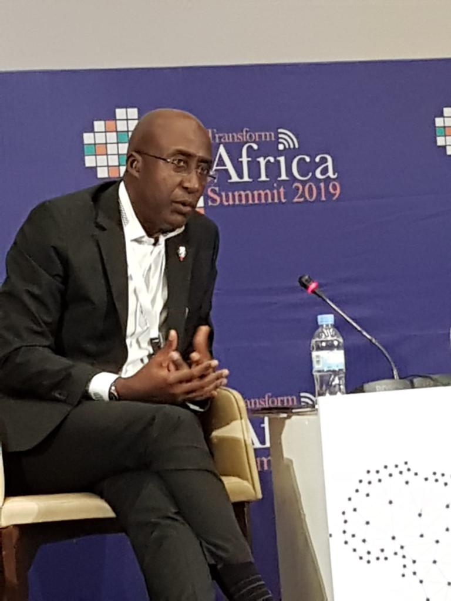
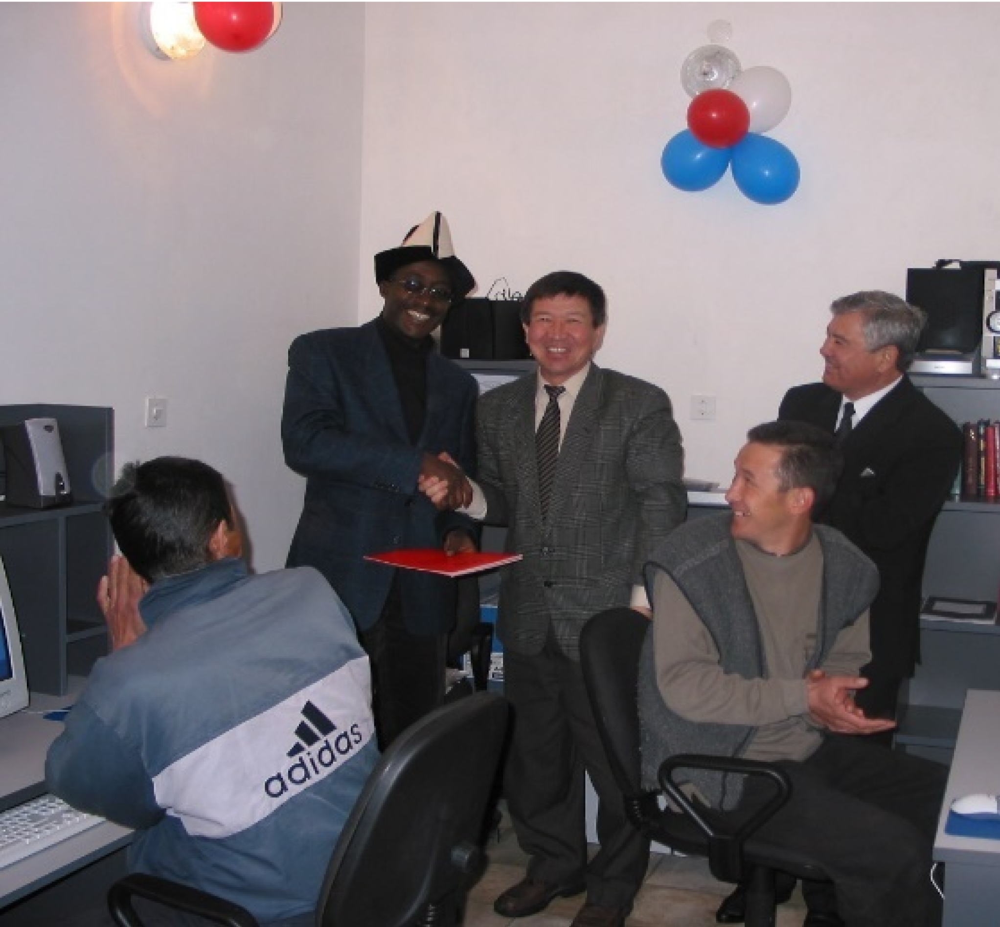
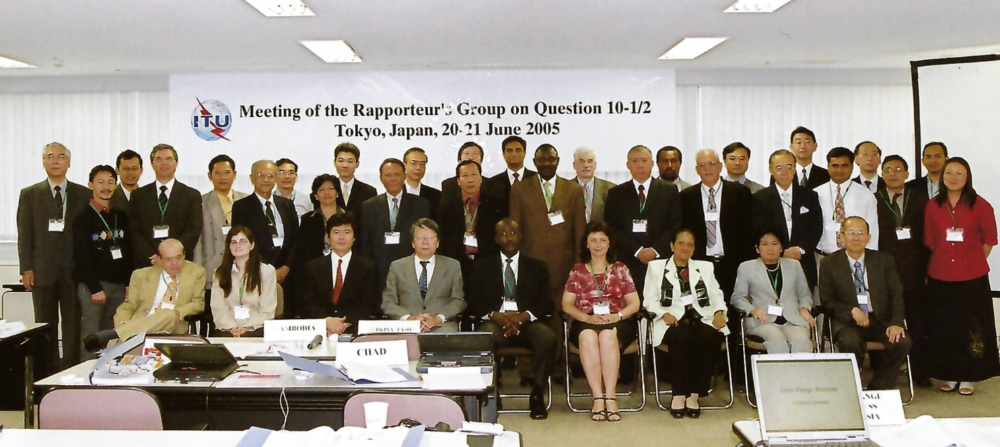

One of three columns
One of three columns
One of three columns
One of three columns
One of three columns
One of three columns
One of three columns
One of three columns
One of three columns

Transform Africa Summit in Kigali
Leadership in the field
Alexander has been widely credited with leading the efforts in introducing internet applications and services into ITU, bringing the internet to his home country, Cameroon, in 1997 and helping his and other countries claim their country code top-level domains. In 1998, he wrote a technology and policy paper published at ITU Telecom 98 Forum in South Africa, explaining why all regions (in this case, Africa) needed their own Internet Registry. Later in 2001, he followed his research with implementation by creating one of the first local Internet registries in Africa for Cameroon.
Alexander is no stranger to BDT, as his activities in the Telecommunication Development Bureau (BDT) started some 22 years ago at WTDC-1998 in Valetta, Malta where he did a live demonstration on electronic commerce based on an innovative platform which he led the design, development and implementation. This platform was the foundation of the ITU initiative - Electronic Commerce for Developing Countries (or EC-DC) which he directed at the global level to introduce for the first time in ITU’s history (and in the history of the United Nations (UN)), activities on e-commerce in developing countries from all regions of the world. A pioneering project launched during the early days of e-commerce, EC-DC generated interest from more than 100 countries and even in its early days, received an award at the Global Bangemann Projects Challenge in Sweden and was cited in Time Magazine as a major global e-commerce initiative. Alexander knew that implementation was key to achieving connectivity for all, and made it its life mission to move forward in this path.
Know More About EC-DC
From e-commerce, he extended initiatives on the use of ICTs to other sectors such as health, agriculture, public administration, education, etc. Four years later, at the 2002 WTDC in Istanbul, Turkey, his activities in e-commerce, e-government, e-agriculture, e-health etc., led to the approval by ITU membership of the new programme which extended ITU’s development mandate to new sectors. Within this new programme, he managed the implementation of projects on e-health, e-government, e-agriculture, e-education, e-payment and e-business and cyber security and pioneered initiatives promoting the use of advanced security technologies (biometric authentication and Public Key Infrastructure) in developing countries from various regions of the world.
The successful implementation of this first e-agriculture project in rural Kyrgyzstan in 2002 led to it being show-cased at WSIS 2003 with live video connection between Palexpo and the village. The village community could interact with the officials participating in the Summit (including the President of Kyrgyzstan) This is one of the demos that the President of Romania was watching.
President of Romania at stand (WSIS 2003)

E-agriculture in Kyrgyzstan
He played a very active role at the 2003 Geneva Phase of the World Summit on Information Society (WSIS) where he demonstrated innovative initiatives in the use of ICTs for the benefit of mankind, with Heads of States and senior government and industry officials attending and visiting his exhibition stand (BDT E-Applications) at the Summit in Palexpo, Geneva.

E-government in Paraguay

BDT e-Applications stand at Palexpo (WSIS 2003)

ITU-D Rapporteur’s Group meeting in Japan
His official travels to about 100 countries, meetings with senior government officials including at the ministerial level, technology leaders and other stakeholders, enabled him to develop a broad perspective on technology, policy and strategy issues in the use of ICTs for the benefit of mankind and understand better how to serve each nation. He has written and published papers on technology strategies and has been a champion in gender parity matters for more than 20 years. Alexander does not only talk about inclusion, but he leads teams to develop and implement solutions that make inclusion a reality. Such a solution is the MyMeetings platform. In February 2021 he collected the
Geneva Engage Awards, an award given to ITU by the Geneva Internet Platform and DiploFoundation for innovation in the development of ITU’s remote participation platform (MyMeetings) developed under his leadership. Alexander’s work has been cited in several media including Time Magazine, CNN, BBC, United Nations TV, International Herald Tribune, Middle East Communications, International Security Review, Tribune de Genève, AGEFI and Suddeutsch Zeitung, etc. Articles about his work have also been written in several languages including Chinese, Japanese, Polish, French, Spanish, Bulgarian and Arabic languages in both printed and electronic media.
More about EC-DC
Vision and Plan for ITU-D and the ITU Development Bureau (BDT)
My vision is to firmly establish the ITU-D as the premier platform within the UN system for ICT4D matters, engaging partners from governments, the private sector, academia and other stakeholders into an action-oriented dialogue and meaningful contribution to global initiatives with significant impact towards achieving the goals and targets of the 2030 Agenda for Sustainable Development. Well-developed and designed initiatives already exist but where emphasis is required is on actions to transform them into concrete implementable solutions with tangible outcomes and measurable improvements in the use of ICTs to contribute towards meeting the UN SDGs. ITU commitment to connect the world should go hand in hand with protection, up-skill,empowering and fostering innovation, I look forward to continuing and expanding existing efforts in Child online Protection and addressing the needs of vulnerable communities including persons with disabilities; launching a Youth and Women Empowerment fund with the support of membership to ensure that Youth and Women are up-skilled and empowered and fully engage in technology development and innovation to address the most pressing issues. If elected,I intend to bring together my experiences in ICTs (technologies, policies, and strategies), management, forging global partnerships, and my very broad knowledge of ITU’s development mandate to enable active collaboration between developed and developing countries in designing innovative and tailored solutions towards achieving the SDGs. With a continuous focus on connecting the unconnected and bridging the wider digital divide, my strategy is to build on-existing initiatives by embedding new and emerging technologies with the active involvement of all relevant players including youth, Women, SMEs/startups, to ensure that no one is left behind. Together we can push the boundaries of digitalization by positioning inclusive implementation, and meaningful impact at the heart of all programs and initiatives.The ITU Smart Incubator is a concrete step I took to empower entrepreneurial youth from the most remote areas to build their startups and solutions based on global standards by ITU-T using frontier technologies to contribute towards meeting the SDGs.